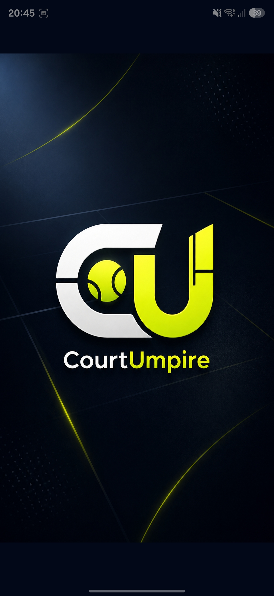
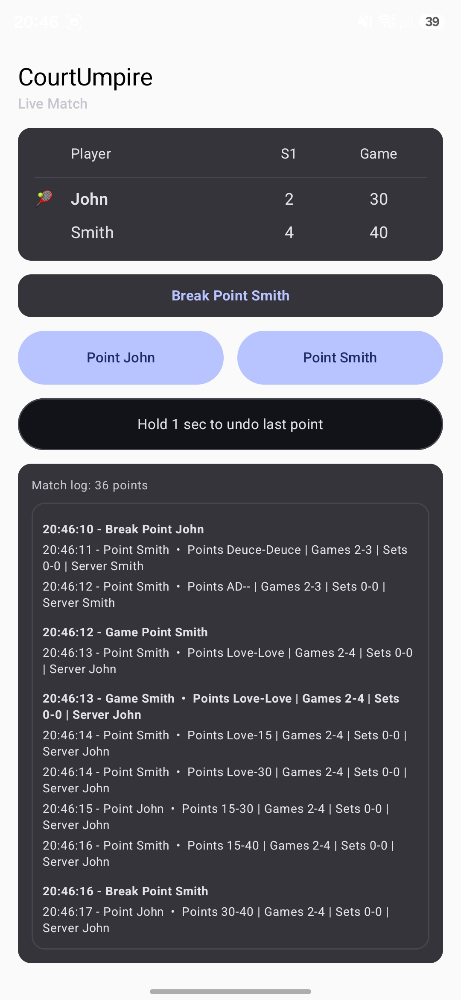
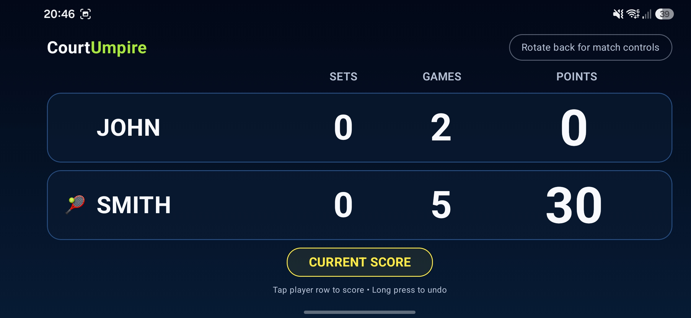
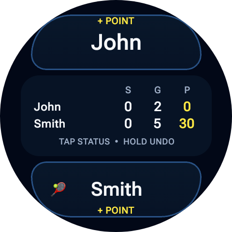
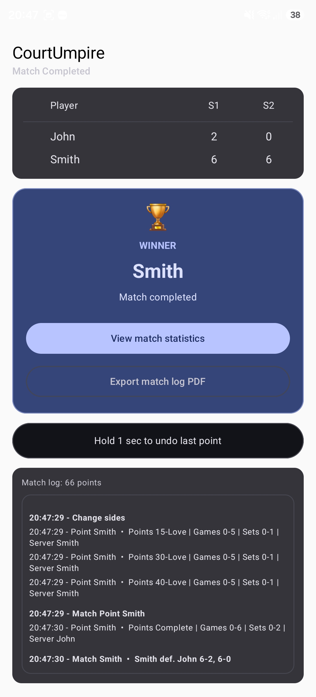
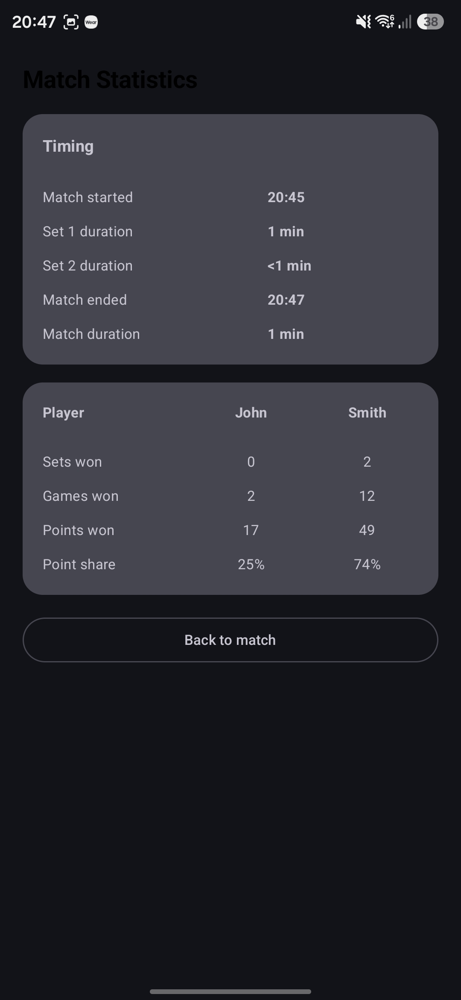
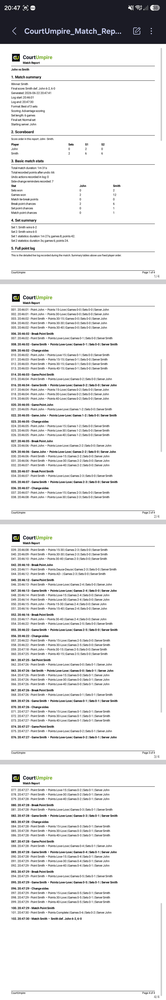

Singles scoring
Track points, games, sets, deuce, advantage, and tiebreaks.
Android + Wear OS
A simple tennis scoring app for amateur players, with voice umpire, match log, PDF report, and Wear OS control.
No account required · No ads · Match data stays on your device

Built for the court
Focused tools for real tennis matches, without unnecessary setup or distractions.
Track points, games, sets, deuce, advantage, and tiebreaks.
Hear the score while your attention stays on the court.
Correct the last point quickly with a deliberate long press.
Always know who is serving throughout the match.
Get a clear prompt when it is time to change ends.
See break point, set point, and match point at a glance.
Review a timestamped record of every important moment.
Generate a detailed match report to save or share.
Score directly from your wrist without reaching for your phone.
The real app
Actual CourtUmpire screens from Android and Wear OS.






Who it is for
Release status
CourtUmpire is currently being prepared for testing. The first early testing version focuses on singles scoring, voice announcements, match log, PDF export, and Wear OS control.